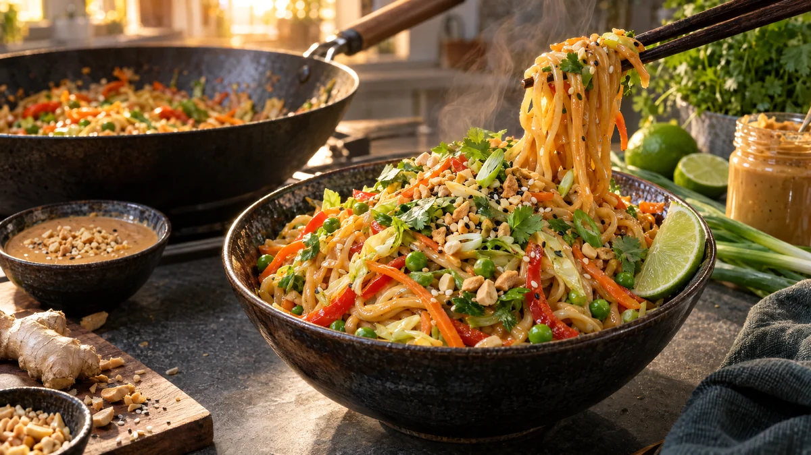

RESTFEST · RECEPTHuvudrätt
Nudelwok med krämig jordnötssås och grönsaker
Ett paket nudlar, en burk jordnötssmör och grönsakslådans morot, paprika och kål. Grönsakerna wokas krispiga på hög värme och vänds med nudlarna i en len, söt och salt jordnötssås med lime och ingefära. Toppa med rostade jordnötter och koriander. Klart på en kvart, och godare än hämtmaten.
- Förberedelse
- 15 min
- Tillagning
- 10 min
- Portioner
- 4
- Nivå
- Nybörjare
 Det här behöver du
Det här behöver du
JÄMFÖRT MED DIN KYL
Tryck på + vid det du behöver köpa.
Jordnötssås
Nudlar och grönsaker
Till servering
Gör så här
- Vispa ihop alla ingredienser till jordnötssåsen tills den är slät.
- Skala moroten och skär den i tunna stavar. Strimla paprikan och kålen tunt. Skiva salladslöken och håll isär de vita och de gröna delarna.
- Koka nudlarna enligt förpackningen, häll av och skölj dem snabbt i kallt vatten så att de inte klistrar ihop.
- Hetta upp oljan i en wok eller stor stekpanna på hög värme. Woka morot, paprika, kål och de vita salladslöksbitarna i 3–4 minuter, tills grönsakerna har fått lite färg men fortfarande är krispiga. Lägg i ärterna den sista minuten.
- Lägg i nudlarna och häll över såsen. Vänd runt med en tång i 1–2 minuter, tills allt är varmt och blankt. Späd med lite vatten om såsen blir för tjock.
Dekoration och servering
- Lägg upp nudlarna i höga högar i djupa skålar, med grönsakerna synliga överst.
- Toppa med jordnötter, koriander, de gröna salladslöksbitarna och sesamfrön, och servera med limeklyftor.
- Byt ut grönsakerna mot det som finns i kylen, till exempel broccoli, sockerärtor eller champinjoner.
- Byt jordnötterna och jordnötssmöret mot solrosfrön och tahini om någon vid bordet är allergisk.
Mått och ugnstemperaturer
Måtten är svenska (dl, msk, tsk, krm). Ugnstemperaturerna gäller vanlig ugn med över- och undervärme; med varmluft, sänk med 20 grader.